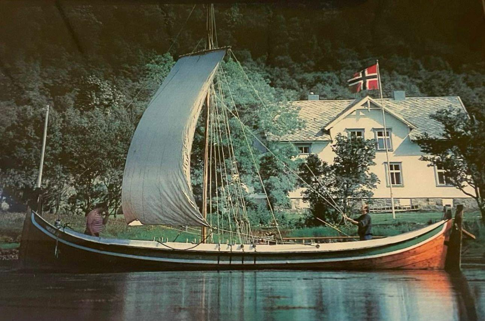

For bevaring av nordnorsk kyst- og kulturarv — gjennom aktiv drift, eierskap og vedlikehold av tradisjonelle nordlandsbåter.
Preserving Northern Norwegian coastal and cultural heritage — through active stewardship, ownership, and care of traditional Nordland boats.
Om Foreningen
About the Association
EB Kystarv ble etablert i 2025 av familien Berg Jensen på Evenes i Nordland — for å forvalte familiens lidenskap for lokal kystkultur og samlingen av tradisjonelle nordlandsbåter.
EB Kystarv was established in 2025 by the Berg Jensen family in Evenes, Nordland — to steward the family's passion for local coastal culture and a collection of traditional Nordland boats.
Foreningens medlemmer er omforente om et vedtektssatt felles mål om å ta vare på, tilgjengeliggjøre, formidle og forvalte vår felles kystarv gjennom aktiv drift, eierskap og vedlikehold av kystanlegg og tradisjonelt håndverk.
Foreningen forvalter i dag åtte tradisjonelle nordlandsbåter, der vedlikehold, opplag og drift skjer ved familien Berg Jensens anlegg på Evenes.
The members of the association share a common purpose, established in our statutes: to preserve, make accessible, communicate, and steward our shared coastal heritage through the active operation, ownership, and maintenance of coastal facilities and traditional craftsmanship.
The association currently stewards eight traditional Nordland boats, with maintenance, winter storage, and operation taking place at the Berg Jensen family's facilities in Evenes.
Flåten
The Fleet
Åtte tradisjonelle nordlandsbåter under forvaltning
Eight traditional Nordland boats under stewardship
i.FembøringÉn båtOne vessel
ii.ÅttringerTo båterTwo vessels
iii.2½-roringerFem båterFive vessels

Åttring «Orion» under seilÅttring "Orion" under sail